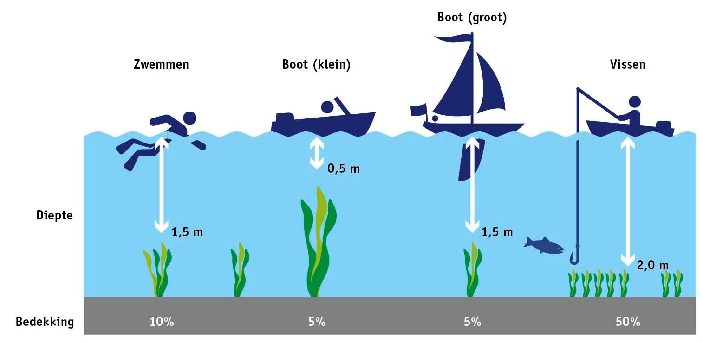
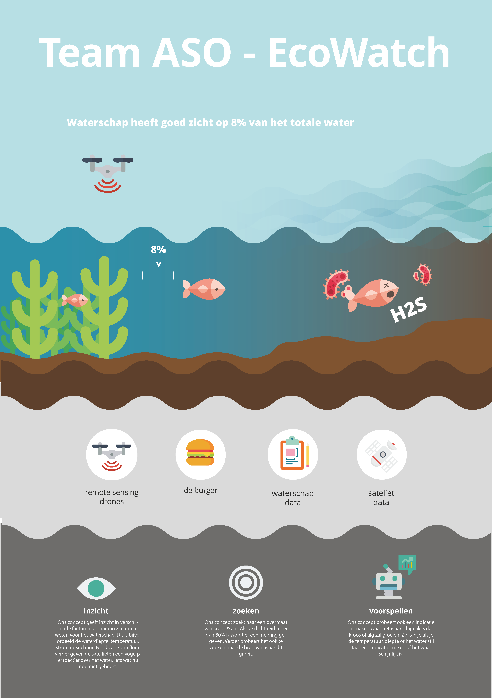

Satellites generate massive amounts of data every day about our planet, there are open data sets with multi petabytes scale of data. CGI asked us to think how we could use this data for the security and health of the Netherlands. As a team we’ve chosen to go for the subject of water quality.
Background
The main reason I chose this project was because using data from space sounded like I was right into Star Trek. My first action was doing research on these satellites and discovering what their ‘superpowers’ were. To share these insights with the rest of my team I made a couple of posters, explaining each super power.
Networking is something that is very central to my design process. I enjoy seeking experts on specific subjects since this is much more effective than desk research. Since we focused on the water quality, my most logical step was seeking contact with the waterboards. Doing this I got in contact with Delfland waterschap and Hollandse Delta.
The big assumption I had is that optimal water quality was the goal. However, a lot of people desire bad water quality… People don’t like water plants, they’re scary to swim in, fishing rods get stuck and boats can’t easily get through. Therefore, the goal is not to optimize water quality, it’s to find a balance between good and bad water quality.
The waterboard only has about 8% insight in all the fresh water bodies in the netherlands, this makes it difficult to effectively monitor. Bad water quality will cause water to become anoxic, resulting in a bad smell (H2S) and many water plants to die. Therefor I wanted to focus on building something that would give the Waterboards more insight in the water, for effective monitoring.
Solution
The solution is to create a system, where all different sources of data are unified. Combining the satellite data, the data of the waterboards (such as water monsters, fish counts, etc) and making it easy for people to file complaints about the water.
Because the waterboards would work with this system, I decided to let them use it. This way I could ideate features with them, since they know much better than me what they need to see to manage water quality.

Important things they would like to see was; Water Depth, Water Turbidity, Water Temperature, Wind Direction and seeing these in the context of a time scope. These are all things that can be done by Remote Sensing technology.